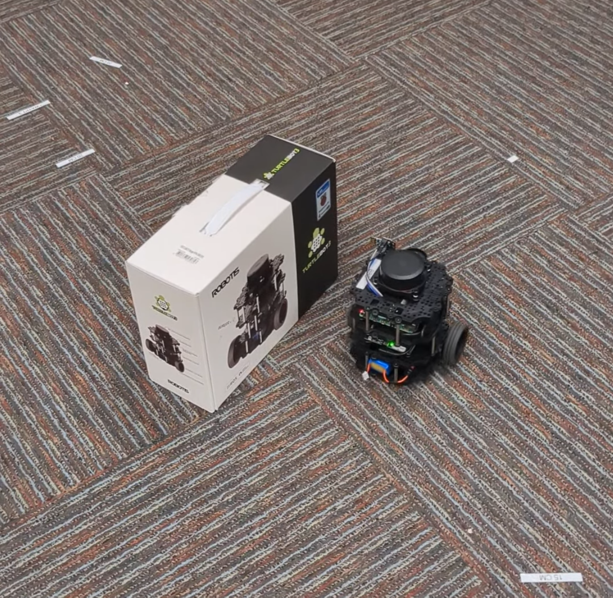

Dead Reckoning & Obstacle Avoidance
For a lab project as part of my Robotics Master's degree at Georgia Institute of Technology, a codebase was developed to interface with the open-source TurtleBot3 Burger.
Using ROS2, the goal of the project was to implement an obstacle avoidance and global navigation algorithm that leveraged onboard odometry and LiDAR scan topics. The robot was required to navigate to multiple global waypoints within a defined success threshold, while avoiding unknown obstacles, preventing collisions, and meeting time constraints.

Using onboard odometry and dead reckoning, the robot's position in the global frame was continuously estimated. The 360-degree LiDAR sensor enabled real-time detection and avoidance of obstacles in the environment.
To achieve this, two communicating nodes were implemented. The get_object_range node detected the range and orientation of obstacles in the robot's local frame. It subscribed to the /scan topic to receive LiDAR data, processed all range measurements across each rotation, identified the closest obstacle, computed a weighted average of ranges in that direction (excluding NaN values), and published the resulting angle and distance to the go_to_goal node.
The go_to_goal node controlled the robot using the processed obstacle data. It first read target waypoints from a text file, then used two PID (proportional, integral, derivative) controllers—one for angular velocity and one for linear velocity—to navigate toward each goal. When an obstacle was detected within a defined threshold, the node transformed the local obstacle position into global coordinates and initiated a left wall-following behavior. Once the path to the goal was clear, the robot resumed direct navigation. The PID controllers continuously generated the linear and angular velocity commands sent to the robot's motors.
- ROS2 (nodes, topics, publishers/subscribers)
- Dead reckoning and odometry-based localization
- PID control systems (linear and angular control)
- Obstacle detection with LiDAR
- Reactive obstacle avoidance
- Waypoint-based navigation
- Coordinate transformations and vector-based motion
- Real-time robotic control systems
- Embedded robotics on Linux platforms
Current Location
North of Atlanta, GAUnited States of America